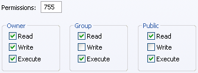

Step 3 - Setting File Permissions
For detailed instructions, please view YaBB Codex Installation Guide.

After you have completed the section of this guide titled "Step 2 - Uploading," you must now set the file permissions on the files listed in the table below. Since this is a Linux/*nix function, Windows server users will not be able to do this. On a Windows/NT server, however, you will need to give the data folders (those specified to be chmod 777) full read/write permissions. On Windows servers, you will probably need to contact your web host's support department and request that these permissions be set for you.If you do not understand what chmod is or how to do it, please view the YaBB Codex Chmod Tutorial
------- NON cgi-bin section ---------
- drwxrwxrwx (chmod 777)public_html/yabbfiles
- -rw-rw-rw- (chmod 666)(in ASCII)public_html/yabbfiles/*.js
- drwxrwxrwx (chmod 777)public_html/yabbfiles/Attachments
- drwxrwxrwx (chmod 777)public_html/yabbfiles/avatars
- -rw-rw-rw- (chmod 666)(in Binary)public_html/yabbfiles/avatars/* (all files)
- drwxrwxrwx (chmod 777)public_html/yabbfiles/Buttons
- -rw-rw-rw- (chmod 666)(in Binary)public_html/yabbfiles/Buttons/English/* (all files)
- drwxrwxrwx (chmod 777)public_html/yabbfiles/ModImages
- drwxrwxrwx (chmod 777)public_html/yabbfiles/Smilies
- -rw-rw-rw- (chmod 666)(in Binary)public_html/yabbfiles/Smilies/* (all files)
- drwxrwxrwx (chmod 777)public_html/yabbfiles/Templates/Admin
- -rw-rw-rw- (chmod 666)(in Binary)public_html/yabbfiles/Templates/Admin/default/* (all files)
- -rw-rw-rw- (chmod 666)(in ASCII)public_html/yabbfiles/Templates/Admin/default.css
- drwxrwxrwx (chmod 777)public_html/yabbfiles/Templates/Forum
- -rw-rw-rw- (chmod 666)(in Binary)public_html/yabbfiles/Templates/Forum/default/* (all files)
- -rw-rw-rw- (chmod 666)(in ASCII)public_html/yabbfiles/Templates/Forum/default.css
------- CGI-BIN section (all files in ASCII) ---------
- -rwxr-xr-x (chmod 755)cgi-bin/yabb2
- -rwxr-xr-x (chmod 755)cgi-bin/yabb2/AdminIndex.pl
- -rwxr-xr-x (chmod 755)cgi-bin/yabb2/FixFile.pl
- -rw-rw-rw- (chmod 666)cgi-bin/yabb2/Paths.pl
- -rwxr-xr-x (chmod 755)cgi-bin/yabb2/Setup.pl
- -rwxr-xr-x (chmod 755)cgi-bin/yabb2/YaBB.pl
- drwxrwxrwx (chmod 777)cgi-bin/yabb2/Admin
- -rw-rw-rw- (chmod 666)cgi-bin/yabb2/Admin/* (all files)
- drwxrwxrwx (chmod 777)cgi-bin/yabb2/Boards
- -rw-rw-rw- (chmod 666)cgi-bin/yabb2/Boards/* (all files)
- drwxrwxrwx (chmod 777)cgi-bin/yabb2/Convert
- drwxrwxrwx (chmod 777)cgi-bin/yabb2/Convert/Boards
- drwxrwxrwx (chmod 777)cgi-bin/yabb2/Convert/Members
- drwxrwxrwx (chmod 777)cgi-bin/yabb2/Convert/Messages
- drwxrwxrwx (chmod 777)cgi-bin/yabb2/Convert/Variables
- drwxrwxrwx (chmod 777)cgi-bin/yabb2/Help/English/Admin
- -rwxrwxrwx (chmod 777)cgi-bin/yabb2/Help/English/Admin/* (all files)
- drwxrwxrwx (chmod 777)cgi-bin/yabb2/Help/English/Gmod
- -rwxrwxrwx (chmod 777)cgi-bin/yabb2/Help/English/Gmod/* (all files)
- drwxrwxrwx (chmod 777)cgi-bin/yabb2/Help/English/Moderator
- -rwxrwxrwx (chmod 777)cgi-bin/yabb2/Help/English/Moderator/* (all files)
- drwxrwxrwx (chmod 777)cgi-bin/yabb2/Help/English/User
- -rwxrwxrwx (chmod 777)cgi-bin/yabb2/Help/English/User/* (all files)
- drwxrwxrwx (chmod 777)cgi-bin/yabb2/Languages/English
- -rw-rw-rw- (chmod 666)cgi-bin/yabb2/Languages/English/agreement.txt
- -rw-rw-rw- (chmod 666)cgi-bin/yabb2/Languages/English/censor.txt
- drwxrwxrwx (chmod 777)cgi-bin/yabb2/Languages/English/* (remaining files)
- drwxrwxrwx (chmod 777)cgi-bin/yabb2/Members
- -rw-rw-rw- (chmod 666)cgi-bin/yabb2/Members/* (all files)
- drwxrwxrwx (chmod 777)cgi-bin/yabb2/Messages
- -rw-rw-rw- (chmod 666)cgi-bin/yabb2/Messages/* (all files)
- drwxrwxrwx (chmod 777)cgi-bin/yabb2/Modules/Digest
- -rwxrwxrwx (chmod 777)cgi-bin/yabb2/Modules/Digest/HMAC_MD5.pm
- -rwxrwxrwx (chmod 777)cgi-bin/yabb2/Modules/Digest/MD5.pm
- drwxrwxrwx (chmod 777)cgi-bin/yabb2/Modules/Time
- -rwxrwxrwx (chmod 777)cgi-bin/yabb2/Modules/Time/HiRes.pm
- drwxrwxrwx (chmod 777)cgi-bin/yabb2/Modules/Upload
- -rwxrwxrwx (chmod 777)cgi-bin/yabb2/Modules/Upload/CGI.pm
- drwxrwxrwx (chmod 777)cgi-bin/yabb2/Modules/Upload/CGI
- -rwxrwxrwx (chmod 777)cgi-bin/yabb2/Modules/Upload/CGI/Util.pm
- drwxrwxrwx (chmod 766 or 777)cgi-bin/yabb2/Sources
- -rwxr-xr-x (chmod 755)cgi-bin/yabb2/Sources/* (all files)
- drwxrwxrwx (chmod 766 or 777)cgi-bin/yabb2/Templates
- drwxrwxrwx (chmod 766 or 777)cgi-bin/yabb2/Templates/default
- -rw-rw-rw- (chmod 666)cgi-bin/yabb2/Templates/default/* (all files)
- drwxrwxrwx (chmod 766 or 777)cgi-bin/yabb2/Variables
- -rw-rw-rw- (chmod 666)cgi-bin/yabb2/Variables/* (all files)